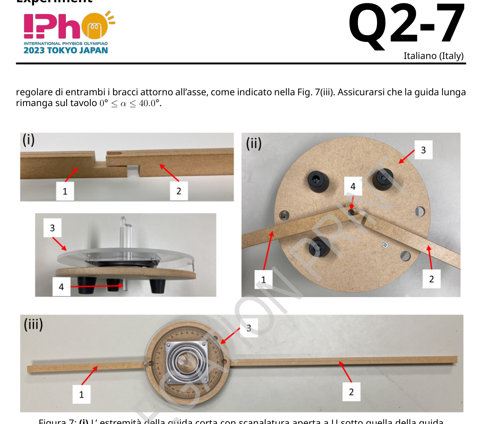

P2 tale per cui la sua direzione di polarizzazione sia perpendicolare a quella della luce trasmessa attraverso il polarizzatore P1. Da questo risultato, trovare l’angolo del supporto di rotazione del polarizzatore P2 quando la sua direzione di polarizzazione è parallela a quella del polarizzatore P1. 0.3 pt A.5 Bloccare la luce attraverso la fenditura ponendo il cartoncino nero davanti alla fenditura. In questo modo è possibile valutare il rumore di fondo del sistema, cioè l’offset dell’intensità dallo zero. Definiamo le intensità luminose e quando gli angoli del supporto di rotazione del polarizzatore P2 sono rispettivamente e . Misurare gli offset e . Si noti che e sono dovuti a luce diversa da quella della sorgente luminosa. Questi valori devono essere eliminati per sottrazione per determinare il solo contributo della sorgente luminosa. 0.2 pt Experiment Q2-9 Italiano (Italy) A.6 e si riferiscono alle intensità luminose della sorgente luminosa quando gli angoli del supporto di rotazione del polarizzatore P2 sono rispettivamente e . Misurare le intensità luminose e per . 0.5 pt Parte B. Misurazione dell’intensità della luce trasmessa (4.7 punti) Di seguito, utilizzare i valori di calcolati utilizzando il valore corretto di in A.3, se necessario. B.1 Posizionare la lastra di quarzo tra i polarizzatori P1 e P2 e misurare le intensità della luce trasmessa e a vari angoli . Le misure devono coprire completamente l’intervallo di lunghezze d’onda da 440 nm a 660 nm. Tabulare i seguenti parametri: (letture dell’angolo dello strumento di rotazione), , , , , , . Si noti che quando il valore di aumenta, il valore di diminuisce della stessa quantità e viceversa. Non è necessario utilizzare tutte le righe della tabella fornita, ma è opportuno prendere abbastanza dati per ottenere risultati accurati. 2.0 pt B.2 Disegnare sul grafico lo spettro del LED bianco, cioè in funzione della lunghezza d’onda. 1.0 pt B.3 Trovare , cioè la larghezza a metà altezza dello spettro del LED blu incorporato nel LED bianco. Essa è la larghezza di un picco misurata tra i punti che si trovano a metà dell’intensità massima. 0.2 pt B.4 Disegnare sul grafico lo spettro di . 1.5 pt Parte C. Analisi delle misure (3.0 punti) C.1 Dal grafico , trovare tutte le lunghezze d’onda alle quali le intensità passano attraverso minimi locali. Il numero d’ordine associato secondo l’Eq. (6) deve essere indicato sotto la lunghezza d’onda corrispondente. Per determinare la birifrangenza , utilizzare i valori di e indicati nella Tabella 1. 1.5 pt C.2 Ottenere lo spessore del campione L. 1.5 pt Experiment Q2-10 Italiano (Italy) Tabella 1: Indici di rifrazione e del quarzo (400-700 nm). λ/nm no ne λ/nm no ne λ/nm no ne 400 1.55769 1.56725 434 1.55394 1.56337 467 1.55107 1.56041 401 1.55756 1.56712 435 1.55384 1.56327 468 1.55099 1.56033 402 1.55744 1.56700 436 1.55374 1.56318 469 1.55091 1.56025 403 1.55732 1.56687 437 1.55365 1.56308 470 1.55084 1.56017 404 1.55720 1.56674 438 1.55355 1.56298 471 1.55076 1.56009 405 1.55707 1.56662 439 1.55346 1.56288 472 1.55068 1.56001 406 1.55695 1.56649 440 1.55337 1.56278 473 1.55061 1.55993 407 1.55684 1.56637 441 1.55327 1.56269 474 1.55054 1.55986 408 1.55672 1.56625 442 1.55318 1.56259 475 1.55046 1.55978 409 1.55660 1.56613 443 1.55309 1.56250 476 1.55039 1.55970 410 1.55648 1.56601 444 1.55300 1.56240 477 1.55031 1.55963 411 1.55637 1.56589 445 1.55291 1.56231 478 1.55024 1.55955 412 1.55625 1.56577 446 1.55282 1.56222 479 1.55017 1.55948 413 1.55614 1.56565 447 1.55273 1.56213 480 1.55010 1.55940 414 1.55603 1.56554 448 1.55264 1.56203 481 1.55003 1.55933 415 1.55592 1.56542 449 1.55255 1.56194 482 1.54995 1.55926 416 1.55580 1.56531 450 1.55247 1.56185 483 1.54988 1.55918 417 1.55569 1.56519 451 1.55238 1.56176 484 1.54981 1.55911 418 1.55558 1.56508 452 1.55229 1.56167 485 1.54974 1.55904 419 1.55548 1.56497 453 1.55221 1.56159 486 1.54967 1.55897 420 1.55537 1.56485 454 1.55212 1.56150 487 1.54961 1.55890 421 1.55526 1.56474 455 1.55204 1.56141 488 1.54954 1.55883 422 1.55515 1.56463 456 1.55195 1.56132 489 1.54947 1.55875 423 1.55505 1.56452 457 1.55187 1.56124 490 1.54940 1.55868 424 1.55494 1.56442 458 1.55179 1.56115 491 1.54933 1.55862 425 1.55484 1.56431 459 1.55171 1.56107 492 1.54927 1.55855 426 1.55474 1.56420 460 1.55162 1.56098 493 1.54920 1.55848 427 1.55463 1.56410 461 1.55154 1.56090 494 1.54913 1.55841 428 1.55453 1.56399 462 1.55146 1.56082 495 1.54907 1.55834 429 1.55443 1.56389 463 1.55138 1.56073 496 1.54900 1.55827 430 1.55433 1.56378 464 1.55130 1.56065 497 1.54894 1.55821 431 1.55423 1.56368 465 1.55122 1.56057 498 1.54887 1.55814 432 1.55413 1.56358 466 1.55115 1.56049 499 1.54881 1.55807 433 1.55403 1.56348 Experiment Q2-11 Italiano (Italy) λ/nm no ne λ/nm no ne λ/nm no ne 500 1.54875 1.55801 534 1.54678 1.55597 567 1.54518 1.55432 501 1.54868 1.55794 535 1.54673 1.55592 568 1.54514 1.55427 502 1.54862 1.55788 536 1.54667 1.55587 569 1.54509 1.55423 503 1.54856 1.55781 537 1.54662 1.55581 570 1.54505 1.55418 504 1.54850 1.55775 538 1.54657 1.55576 571 1.54500 1.55414 505 1.54843 1.55768 539 1.54652 1.55570 572 1.54496 1.55409 506 1.54837 1.55762 540 1.54647 1.55565 573 1.54492 1.55405 507 1.54831 1.55756 541 1.54642 1.55560 574 1.54487 1.55400 508 1.54825 1.55749 542 1.54637 1.55555 575 1.54483 1.55396 509 1.54819 1.55743 543 1.54632 1.55549 576 1.54479 1.55391 510 1.54813 1.55737 544 1.54627 1.55544 577 1.54474 1.55387 511 1.54807 1.55731 545 1.54622 1.55539 578 1.54470 1.55383 512 1.54801 1.55725 546 1.54617 1.55534 579 1.54466 1.55378 513 1.54795 1.55718 547 1.54612 1.55529 580 1.54462 1.55374 514 1.54789 1.55712 548 1.54607 1.55524 581 1.54458 1.55370 515 1.54783 1.55706 549 1.54602 1.55519 582 1.54453 1.55365 516 1.54777 1.55700 550 1.54597 1.55514 583 1.54449 1.55361 517 1.54772 1.55694 551 1.54592 1.55509 584 1.54445 1.55357 518 1.54766 1.55688 552 1.54587 1.55504 585 1.54441 1.55352 519 1.54760 1.55682 553 1.54583 1.55499 586 1.54437 1.55348 520 1.54754 1.55676 554 1.54578 1.55494 587 1.54433 1.55344 521 1.54749 1.55671 555 1.54573 1.55489 588 1.54429 1.55340 522 1.54743 1.55665 556 1.54568 1.55484 589 1.54425 1.55336 523 1.54738 1.55659 557 1.54564 1.55479 590 1.54421 1.55331 524 1.54732 1.55653 558 1.54559 1.55474 591 1.54417 1.55327 525 1.54726 1.55648 559 1.54554 1.55470 592 1.54413 1.55323 526 1.54721 1.55642 560 1.54550 1.55465 593 1.54409 1.55319 527 1.54715 1.55636 561 1.54545 1.55460 594 1.54405 1.55315 528 1.54710 1.55631 562 1.54541 1.55455 595 1.54401 1.55311 529 1.54705 1.55625 563 1.54536 1.55451 596 1.54397 1.55307 530 1.54699 1.55619 564 1.54531 1.55446 597 1.54393 1.55303 531 1.54694 1.55614 565 1.54527 1.55441 598 1.54389 1.55299 532 1.54688 1.55608 566 1.54522 1.55437 599 1.54385 1.55295 533 1.54683 1.55603 Experiment Q2-12 Italiano (Italy) λ/nm no ne λ/nm no ne λ/nm no ne 600 1.54382 1.55291 634 1.54260 1.55165 667 1.54157 1.55059 601 1.54378 1.55287 635 1.54257 1.55162 668 1.54154 1.55056 602 1.54374 1.55283 636 1.54254 1.55159 669 1.54151 1.55053 603 1.54370 1.55279 637 1.54250 1.55155 670 1.54148 1.55050 604 1.54366 1.55275 638 1.54247 1.55152 671 1.54145 1.55047 605 1.54363 1.55271 639 1.54244 1.55148 672 1.54143 1.55044 606 1.54359 1.55267 640 1.54241 1.55145 673 1.54140 1.55041 607 1.54355 1.55264 641 1.54237 1.55142 674 1.54137 1.55038 608 1.54351 1.55260 642 1.54234 1.55138 675 1.54134 1.55035 609 1.54348 1.55256 643 1.54231 1.55135 676 1.54131 1.55032 610 1.54344 1.55252 644 1.54228 1.55132 677 1.54128 1.55029 611 1.54340 1.55248 645 1.54224 1.55128 678 1.54125 1.55026 612 1.54337 1.55245 646 1.54221 1.55125 679 1.54123 1.55023 613 1.54333 1.55241 647 1.54218 1.55122 680 1.54120 1.55020 614 1.54330 1.55237 648 1.54215 1.55119 681 1.54117 1.55017 615 1.54326 1.55233 649 1.54212 1.55115 682 1.54114 1.55014
p.7 — Montaggio piattaforma di rotazione e guida

Topic: Wave Optics, Geometric Optics, Oscillations & Waves Metodi: Interference & Diffraction Analysis, Experimental Data Analysis, Superposition Principle Competenze: Experimental Data Analysis, Graph Linearization, Measurement & Instrumentation Objects: Diffraction Grating Fonte: Testo (PDF) — p.8 Soluzione: Soluzioni (PDF)
P2 such that its direction of polarization is perpendicular to that of the light transmitted through the polarizer P1. From this result, find the angle of the rotary support of the polarizer P2 when its direction is The polarization is parallel to that of the polarizer P1. 0.3 pt A.5 Block the light through the crack by placing the black cardboard in front of the The cracking. This way you can evaluate the background noise of the system, This is the offset of the zero intensity. We define the light intensities and when the angles of the rotary support of the polarizer P2 are rispettivamente e . Measure the offsets and . Please note that and are due to light different from that of the light source. These values must be deleted by subtraction to determine only the contribution from the light source. 0.2 pt Experiments Q2-9 Italian (Italy) A.6 and refer to the light intensities of the light source when the light source is The angles of the rotary support of the polarizer P2 shall be respectively. e . The light intensities and shall be measured for . 0.5 pt Part B. Measurement of the intensity of the light transmitted (4.7 points) Next, use the values of calculated using the correct value of in A.3, if necessary. B.1 Place the quartz plate between the polarizers P1 and P2 and measure the intensities of light transmitted and at various angles . The measures shall cover: The wavelength range from 440 nm to 660 nm is completely Table the following parameters: (angle readings of the rotating instrument), , , , , , . Note that when the value of The value of decreases by the same amount and vice versa. It is not necessary to use all the rows in the table provided, but it is appropriate to take the following steps: enough data to get accurate results. 2.0 pt B.2 Draw the spectrum of the white LED on the graph, i.e. depending on the The length of the wave. 1.0 pt B.3 Find , that is, the width to half-height of the spectrum of the blue LED embedded in the white LED. It is the width of a peak measured between the points The maximum intensity of the gas is about half that of the maximum intensity. 0.2 pt B.4 Draw the spectrum of on the graph. 1.5 pt Part C. Analysis of the measures (3.0 points) C.1 From the graph, find all the wavelengths at which the intensities pass through local minima. The associated order number according to the equation. (6) The corresponding wavelength shall be indicated below. To determine the the bifrange , use the values of and as shown in Table 1. 1.5 pt C.2 Get the thickness of the L sample. 1.5 pt Experiments Q2-10 Italian (Italy) Table 1: Quartz refractive indices and (400-700 nm). λ/nm no ne λ/nm no ne λ/nm no ne 400 1.55769 1.56725 434 1.55394 1.56337 467 1.55107 1.56041 401 1.55756 1.56712 435 1.55384 1.56327 468 1.55099 1.56033 402 1.55744 1.56700 436 1.55374 1.56318 469 1.55091 1.56025 403 1.55732 1.56687 437 1.55365 1.56308 470 1.55084 1.56017 404 1.55720 1.56674 438 1.55355 1.56298 471 1.55076 1.56009 405 1.55707 1.56662 439 1.55346 1.56288 472 1.55068 1.56001 406 1.55695 1.56649 440 1.55337 1.56278 473 1.55061 1.55993 407 1.55684 1.56637 441 1.55327 1.56269 474 1.55054 1.55986 408 1.55672 1.56625 442 1.55318 1.56259 475 1.55046 1.55978 409 1.55660 1.56613 443 1.55309 1.56250 476 1.55039 1.55970 410 1.55648 1.56601 444 1.55300 1.56240 477 1.55031 1.55963 411 1.55637 1.56589 445 1.55291 1.56231 478 1.55024 1.55955 412 1.55625 1.56577 446 1.55282 1.56222 479 1.55017 1.55948 413 1.55614 1.56565 447 1.55273 1.56213 480 1.55010 1.55940 414 1.55603 1.56554 448 1.55264 1.56203 481 1.55003 1.55933 415 1.55592 1.56542 449 1.55255 1.56194 482 1.54995 1.55926 416 1.55580 1.56531 450 1.55247 1.56185 483 1.54988 1.55918 417 1.55569 1.56519 451 1.55238 1.56176 484 1.54981 1.55911 418 1.55558 1.56508 452 1.55229 1.56167 485 1.54974 1.55904 419 1.55548 1.56497 453 1.55221 1.56159 486 1.54967 1.55897 420 1.55537 1.56485 454 1.55212 1.56150 487 1.54961 1.55890 421 1.55526 1.56474 455 1.55204 1.56141 488 1.54954 1.55883 422 1.55515 1.56463 456 1.55195 1.56132 489 1.54947 1.55875 423 1.55505 1.56452 457 1.55187 1.56124 490 1.54940 1.55868 424 1.55494 1.56442 458 1.55179 1.56115 491 1.54933 1.55862 425 1.55484 1.56431 459 1.55171 1.56107 492 1.54927 1.55855 426 1.55474 1.56420 460 1.55162 1.56098 493 1.54920 1.55848 427 1.55463 1.56410 461 1.55154 1.56090 494 1.54913 1.55841 428 1.55453 1.56399 462 1.55146 1.56082 495 1.54907 1.55834 429 1.55443 1.56389 463 1.55138 1.56073 496 1.54900 1.55827 430 1.55433 1.56378 464 1.55130 1.56065 497 1.54894 1.55821 431 1.55423 1.56368 465 1.55122 1.56057 498 1.54887 1.55814 432 1.55413 1.56358 466 1.55115 1.56049 499 1.54881 1.55807 433 1.55403 1.56348 Experiments Q2-11 Italian (Italy) λ/nm no ne λ/nm no ne λ/nm no ne 500 1.54875 1.55801 534 1.54678 1.55597 567 1.54518 1.55432 501 1.54868 1.55794 535 1.54673 1.55592 568 1.54514 1.55427 502 1.54862 1.55788 536 1.54667 1.55587 569 1.54509 1.55423 503 1.54856 1.55781 537 1.54662 1.55581 570 1.54505 1.55418 504 1.54850 1.55775 538 1.54657 1.55576 571 1.54500 1.55414 505 1.54843 1.55768 539 1.54652 1.55570 572 1.54496 1.55409 506 1.54837 1.55762 540 1.54647 1.55565 573 1.54492 1.55405 507 1.54831 1.55756 541 1.54642 1.55560 574 1.54487 1.55400 508 1.54825 1.55749 542 1.54637 1.55555 575 1.54483 1.55396 509 1.54819 1.55743 543 1.54632 1.55549 576 1.54479 1.55391 510 1.54813 1.55737 544 1.54627 1.55544 577 1.54474 1.55387 511 1.54807 1.55731 545 1.54622 1.55539 578 1.54470 1.55383 512 1.54801 1.55725 546 1.54617 1.55534 579 1.54466 1.55378 513 1.54795 1.55718 547 1.54612 1.55529 580 1.54462 1.55374 514 1.54789 1.55712 548 1.54607 1.55524 581 1.54458 1.55370 515 1.54783 1.55706 549 1.54602 1.55519 582 1.54453 1.55365 516 1.54777 1.55700 550 1.54597 1.55514 583 1.54449 1.55361 517 1.54772 1.55694 551 1.54592 1.55509 584 1.54445 1.55357 518 1.54766 1.55688 552 1.54587 1.55504 585 1.54441 1.55352 519 1.54760 1.55682 553 1.54583 1.55499 586 1.54437 1.55348 520 1.54754 1.55676 554 1.54578 1.55494 587 1.54433 1.55344 521 1.54749 1.55671 555 1.54573 1.55489 588 1.54429 1.55340 522 1.54743 1.55665 556 1.54568 1.55484 589 1.54425 1.55336 523 1.54738 1.55659 557 1.54564 1.55479 590 1.54421 1.55331 524 1.54732 1.55653 558 1.54559 1.55474 591 1.54417 1.55327 525 1.54726 1.55648 559 1.54554 1.55470 592 1.54413 1.55323 526 1.54721 1.55642 560 1.54550 1.55465 593 1.54409 1.55319 527 1.54715 1.55636 561 1.54545 1.55460 594 1.54405 1.55315 528 1.54710 1.55631 562 1.54541 1.55455 595 1.54401 1.55311 529 1.54705 1.55625 563 1.54536 1.55451 596 1.54397 1.55307 530 1.54699 1.55619 564 1.54531 1.55446 597 1.54393 1.55303 531 1.54694 1.55614 565 1.54527 1.55441 598 1.54389 1.55299 532 1.54688 1.55608 566 1.54522 1.55437 599 1.54385 1.55295 533 1.54683 1.55603 Experiments Q2-12 Italian (Italy) λ/nm no ne λ/nm no ne λ/nm no ne 600 1.54382 1.55291 634 1.54260 1.55165 667 1.54157 1.55059 601 1.54378 1.55287 635 1.54257 1.55162 668 1.54154 1.55056 602 1.54374 1.55283 636 1.54254 1.55159 669 1.54151 1.55053 603 1.54370 1.55279 637 1.54250 1.55155 670 1.54148 1.55050 604 1.54366 1.55275 638 1.54247 1.55152 671 1.54145 1.55047 605 1.54363 1.55271 639 1.54244 1.55148 672 1.54143 1.55044 606 1.54359 1.55267 640 1.54241 1.55145 673 1.54140 1.55041 607 1.54355 1.55264 641 1.54237 1.55142 674 1.54137 1.55038 608 1.54351 1.55260 642 1.54234 1.55138 675 1.54134 1.55035 609 1.54348 1.55256 643 1.54231 1.55135 676 1.54131 1.55032 610 1.54344 1.55252 644 1.54228 1.55132 677 1.54128 1.55029 611 1.54340 1.55248 645 1.54224 1.55128 678 1.54125 1.55026 612 1.54337 1.55245 646 1.54221 1.55125 679 1.54123 1.55023 613 1.54333 1.55241 647 1.54218 1.55122 680 1.54120 1.55020 614 1.54330 1.55237 648 1.54215 1.55119 681 1.54117 1.55017 615 1.54326 1.55233 649 1.54212 1.55115 682 1.54114 1.55014
p.7 — Montaggio piattaforma di rotazione e guida
Topic: Wave Optics, Geometric Optics, Oscillations & Waves Metodi: Interference & Diffraction Analysis, Experimental Data Analysis, Superposition Principle Competenze: Experimental Data Analysis, Graph Linearization, Measurement & Instrumentation Objects: Diffraction Grating Fonte: Testo (PDF) — p.8 Soluzione: Soluzioni (PDF)